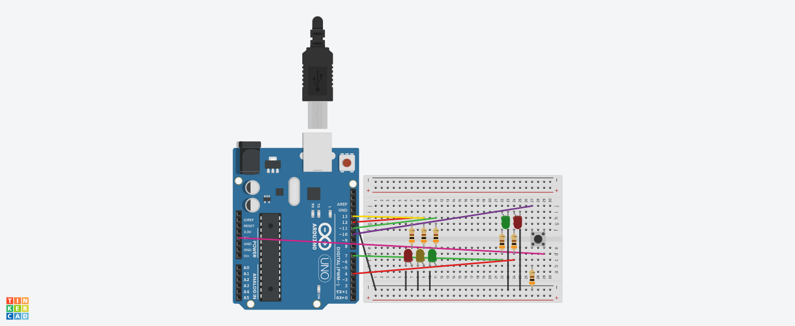

A importância do Sinaliza+ e seu objetivo
O projeto é algo de extrema relevância, pois ele se propõe ser uma solução de acessibilidade para o pedestre, que por muitas vezes acabava em situações de perigo. Com o sistema do nosso projeto, visamos alcançar uma maior asseguridade para o pedestre de maneira que não atrapalhe o trânsito.
Como funciona?
O Sinaliza+ funciona de uma forma bem simples, mas muito eficaz. Enquanto o semáforo dos carros já existe, ocorre a construção de um mini sinal para os pedestres com um botão. Após isso, basta o pedestre apertar o botão e esperar, que o sistema entenderá que há pedestres para atravessar, iniciando o ciclo semafórico para ambos os sinais.
Quem é afetado pelo Sinaliza+?
Basicamente qualquer pessoa que estiver em tráfego pela cidade sentirá o impacto, pois a ideia é implementarmos nosso projeto nos semáforos urbanos.
Esquema Conceitual
A imagem abaixo representa a estrutura do semáforo inteligente montado com Arduino:
